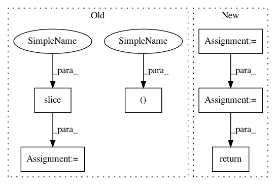

c18ea010c0f43c5144f1c5265874709f68c2e1f3,lazyflow/utility/blockwise_view.py,,blockwise_view,#Any#Any#Any#,3
Before Change
// Pad leading dims with 1
padded_dims = 5-a.ndim
blockshape_5d = (1,) * padded_dims + blockshape
a_5d = a[(None,)*padded_dims]
view_10d = blockwise_view_5d( a_5d, blockshape_5d )
// Drop the extra dimensions
slicing_5d = (0,)*padded_dims + (slice(None),)*a.ndim
slicing_10d = slicing_5d + slicing_5d
view = view_10d[slicing_10d]
assert view.shape == tuple(numpy.array(a.shape) / blockshape) + blockshape
if require_aligned_blocks:
After Change
// inter_block_strides = a.itemsize * numpy.array([z*y*x*bt, y*x*bz, x*by, bx])
// strides within each block
intra_block_strides = [1]
for s in a.shape[-1:0:-1]:
intra_block_strides.append( s*intra_block_strides[-1] )
intra_block_strides = numpy.array(intra_block_strides[::-1])
// strides from one block to another
inter_block_strides = numpy.array(intra_block_strides) * blockshape
intra_block_strides *= a.itemsize
inter_block_strides *= a.itemsize
strides = tuple(inter_block_strides) + tuple(intra_block_strides)
// This is where the magic happens.
// Generate a view with our new strides.
return numpy.lib.stride_tricks.as_strided(a, shape=view_shape, strides=strides)
In pattern: SUPERPATTERN
Frequency: 4
Non-data size: 6
Instances
Project Name: ilastik/ilastik
Commit Name: c18ea010c0f43c5144f1c5265874709f68c2e1f3
Time: 2015-01-28
Author: bergs@janelia.hhmi.org
File Name: lazyflow/utility/blockwise_view.py
Class Name:
Method Name: blockwise_view
Project Name: ilastik/ilastik
Commit Name: c18ea010c0f43c5144f1c5265874709f68c2e1f3
Time: 2015-01-28
Author: bergs@janelia.hhmi.org
File Name: lazyflow/utility/blockwise_view.py
Class Name:
Method Name: blockwise_view
Project Name: GPflow/GPflow
Commit Name: bd1e9c04b48dd5ccca9619d5eaa2595a358bdb08
Time: 2020-01-31
Author: st--@users.noreply.github.com
File Name: gpflow/kernels/linears.py
Class Name: Linear
Method Name: K_diag
Project Name: GPflow/GPflow
Commit Name: bd1e9c04b48dd5ccca9619d5eaa2595a358bdb08
Time: 2020-01-31
Author: st--@users.noreply.github.com
File Name: gpflow/kernels/misc.py
Class Name: ArcCosine
Method Name: K_diag
Project Name: GPflow/GPflow
Commit Name: bd1e9c04b48dd5ccca9619d5eaa2595a358bdb08
Time: 2020-01-31
Author: st--@users.noreply.github.com
File Name: gpflow/kernels/misc.py
Class Name: Coregion
Method Name: K_diag